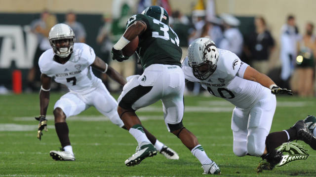

8:00 PM ET, August 30, 2013 Spartan Stadium, EAST LANSING, MI
Michigan State 26: W Michigan 13

Michigan State beats Western Michigan
It has frequently been argued that salaries of football or basketball coaches at NCAA Division 1 schools are too high. In fact, their annual salaries are very high. According to the USA Today Sports college football coaches salaries database, 74 out of 124 of the coaches listed in the database received salaries of at least one million dollars in 2013. Nick Saban, head coach of Alabama Crimson Tide football, made $5,316,667 from the university. USA Today also states that in 2013, 36 out of 68 college basketball coaches’ salaries are above one million dollars. The head coach of Duke Blue Devils men’s basketball, Mike Frzyewski, earned $7,233,976 this year.
How high are those salaries? Let’s look at a soccer example. Manchester United is Forbes’ World’s Most Valuable Soccer Team, with current value of $3,165 million. The richest professional soccer team pays its new manager (coach) – David Moyes – 5 million pounds per year, about 8 million USD. Considering number of matches per season, in 2012-2013 season, Manchester United had 38 games in Premier League, 6 games in FA Cup, 2 matches in League Cup, and 8 matches in UEFA Champions League, 44 matches in total. David Moyes’ payment per game is much less than that of college coaches Nick Saban and Mike Frezyewski.
NCAA DIV 1 football/basketball coaches are high paid, but that does not mean they are overpaid. First of all, like professors in college, head coaches of football or basketball teams are professionals. Professors are high-paid because they are highly educated people with many years’ experience of researching and teaching. However, in many cases, a head coach is much harder to replace than a professor. In addition to training and developing athletes, coaches also have to face pressure from media and from fans. By the theory of substitute, on average professional coaches get high pay in the labor market.
Since the amateur status of players will not change, it is impossible for universities to recruit talented players with high compensation. Also, the costs of enrolling student athletes will not vary significantly, regardless of their competence as players. Therefore, hiring a high profile head coach with high compensation can either help university to recruit talented students or help the team to perform better in games.
Unlike professional sports, the aim of college sports to not to make profits. The total revenue of a university’s athletic department is the sum of generated revenue and allocated revenue. Allocated revenue is the part of money transferred from other parts of the universities. That is to say, many universities are actually subsidizing athletic departments. As Leeds and Allmen stated, among all Division 1 Football schools, 18% of universities can cover all their athletic expenses solely by generated revenue; and 58% (18% + 40%) universities generated revenue are able to cover expenses of their football and basketball teams. Thus, signing a contract with huge compensation is not an overpayment to universities.
Shepherd, J. Marshall, and Thomas Knutson. "Teaching and Learning Guide For: The Current Debate on the Linkage between Global Warming and Hurricanes."Geography Compass 2.4 (2008): 1232-236. Print.
This article is more appropriate to be used for a formal research paper, since everything can be traced to its sources. First of all, it has a formal works cited section. Everything mentioned by the author is clear, in term of its authority. Therefore, citing points of view in this article will be more convincing. Moreover, there is a table used in the article. The source of the table, the institute which conduct the research, and the date of the research conducted are all clear cited by the author.
Aldhous, Peter. "GLOBAL WARMING: THE BUCK STOPS HERE." New Scientist Jun 2007: 16-9. ProQuest. Web. 16 Oct. 2013 .
This article, although very well written, is not as appropriate as article 1 to be used for a formal research paper. Although in this article, the author referred some research done by scholar at university, the author did not give a way to find the source. For example, in the text the author stated: “According to analyses by Denny Ellerman, an environmental economist at the Massachusetts Institute of Technology, the scheme has delivered cuts that would have cost about twice as much through standards including demands that plants fit SCX "scrubbers".” However, without formal bibliography, we do not know when and how Denny Ellerman publish the research. Source like this cannot be used for a formal research paper.
There are three major job distinctions of actuaires - Doers, checkers, and signers. The Doers do all of the grunt work - number crunching, programming, and general problem solving such as premium affirmations (for example, if a client wonders why their premium spiked up 25%, the doer would go through and analyze each factor involved with calculating the premium and be able to tell the client the reason for the increase). The checkers just make sure that the doer did his or her job correctly, just looking at each of the calculations and checking for mistakes. The signers are the ones that after the doers and checkers make sure everything looks alright, the signer will then try to make that particular project become part of the company (for example, if the company wants to come out with a new idea or calculation such as lowering a deductible payment, the doer would see what the cost of that program might be, the checker would make sure that the cost is indeed accurate, and the signer would try to make it legal and available to the public).
Each of these levels aren't mutually exclusive, so everyone attends meetings, interacts with various departments, but most of the work is computer work with a spreadsheet and some sort of programming language.
I have been an actuary before. I worked in the Property and Casualty branch of the field for about 6 months. I was just a doer, so basically all I did was sit at a computer and program all day or play with spreadsheets. There were the weekly meetings to attend and other various meetings, but it was vastly computer work.
Passing 2-3 exams is a pretty ambitious goal. The norm is about 1 exam, and 2 will happen right at the end of graduation. But if you have 1 exam passed, you're definitely a very good candidate to get at least an internship. If you interview well, then you can definitely be offered a full time position. If you have 2-3 exams, it would almost be a full time offer to begin with, but you still have to interview well.
I described a bit above about how you can calculate why clients' premiums increased, but more importantly the *real* actuarial work is in rate making. You take statistics of all sorts (locations, accident rates in that location, accidents involving vehicles of different makes and models, average costs of the accidents, etc.) and use those to be able to predict that when someone calls in and says they are a 40 year old married male who drives a 2010 Ford Fusion, you would be able to predict how many accidents this person would be involved with and how much those would cost. From there, you know how much to charge for insurance - enough to cover his losses, but not so much that it's too high and he wouldn't buy it.
Working as an actuary is pretty easy going - when I worked, it was a salaried position, meaning that you have to work 40 hours per week (or whatever they state), and you receive an annual salary of $X. So if I worked more than 40 hours per week, I'd still only receive $X. Same if I worked less. As such, my bosses pretty much told me that my work load was on a "get your job done" basis - If my work was done, then go home; if it's not, then I need to stay. And the great thing about it is that when you leave the office, you don't take your work with you so you can go have a social life outside of work.
Yes, but no. You can technically do it, but you will be pretty hampered if you don't get experience before you have your ASA. You will end up pricing yourself out of a job. You'll want to be paid $90,000 for having an ASA, but with no experience, people are only going to offer you the same amount as an entry level job around $50,000. You really want to work and progress towards your ASA at the same time.
The important thing is passing the exams. I know an actuary whose degree is in geology - pretty much unrelated. As long as you learn what the actuaries need to learn (i.e. the exam material), then you'll be as well off as anyone else.